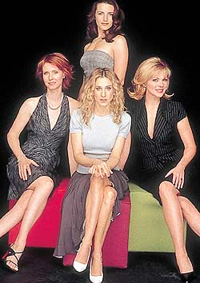

做个小游戏 @ Mar 06, 2003
没完没了的下雨，做个小游戏吧！问这个ROBOT问题，用英文问，问问它想和它结婚想和它亲吻，看他怎么回答？
昨晚看了《SEX AND THE CITY》 前两部的六集，从晚上7点一直看到9点半左右，全看完了，后面的三、四部当时店里没有，也不知道什么时候会有的卖，对白挺精彩的，“......你象男人一样去寻欢吗？你爱过吗？你的道德是否也向意大利一样正在下沉？你周围的男人们是否不愿承诺只要做爱？你知道什么是曼哈顿式的结束吗？.......”
专栏作家凯莉思想活跃，深刻尖锐，敏感善良是理性和感性的结合体。她能清晰地看到自己和他人的缺点，但总是掉进各种麻烦的感情里。她一度和比格交往，可拒绝和她结婚的比格却邂逅了模特娜塔莎并闪电结婚。凯莉大受打击，她理性的一面接受了深爱她的亚当，而感性的一面却笃信“得不到的才是最好的”。所以，当比格厌倦了新欢重新回头时，她感性的一面与其发生了关系，而理性的一面却笃信“诚实是最明智的”，并向亚当承认。结果就是，她泪水满面地目送亚当和他破碎的心渐行渐远……
“離情依依”凱莉經典名句
凱莉：當晚我靜下來好好思考宿命.不過是我們為逃避現實而編出的藉口.卻都在意料中.寫在星空下.這或許可以解釋.如果你住在一個連星星都望不見的城市裡.你的感情生活總是隨緣.即使我們的每位男人.每個親吻.每次心痛.都是量身訂作.我們是否仍會因走錯一步而與緣分擦肩而過？我禁不住想：我們是否會因為失誤而與錯過真愛？
Later that night,I’ve got to thinking about fate,the crazy concept that we are not really responsible for the courses our real life takes,But it’s all predictive,reading in the stars,maybe that explains why,if you live in the city,where you can’t even see the stars,your love life tends to feel a little more random,and even if our every man,every kiss,every heartache,is pre-order from some cosmic catalog,can we still take a wrong step and wonder off our personal milkyway?I couldn’t help but wonder,can you make a mistake and miss your fate?
律师玛兰达坚强独立，对工作有自信却惧怕爱情，不能完全释放自己。她渴望有人陪伴，于是请求男友斯蒂夫与她同居。可当她发现同居意味着没有距离和空间的减小时，又突然害怕那种亲密的感觉。于是，斯蒂夫被无情地轰了出去……
夏洛特敏感浪漫，是完全的理想主义者，百分百相信爱情和婚姻。因此她３０多岁了依然坚信灰姑娘和白马王子的故事会发生在自己身上，并期待从此过上幸福快乐的生活。于是，当英俊富有，体贴的特瑞出现时，她牢牢地抓住了这个梦。但现实永远是残酷的，特瑞不为人知的生理缺陷使二人的关系陷入困境，婚姻至上的夏洛特突然发现自己成了出轨的那一个……
公关经理萨曼莎对任何事都充满自信或过度自信，从不掩饰自己的欲望和放荡不羁。她有目标就去追求，本能地展示自己的魅力，并能轻易地和偶遇的男士发生一夜情，却也永远能分清欲望和爱情。萨曼莎享受着她的单身生活，周旋在各式各样的男人中间乐此不疲……

凯莉：我不得不承认，比格让我伤痕累累。我们就像住在高楼上的骄傲女人，被自己的激情灼伤了，害怕重新开始。
萨曼莎：你做完眼睛手术可以让史蒂夫来帮你。
玛兰达：为什么叫他？我不需要男人的帮助，我一个人能应付。再说了，我们只是普通朋友。
萨曼莎：得了。咱们俩是朋友，怎么我不跟你上床？只有女人才是拿来交朋友的，男女之间没有友谊。
凯莉：我们究竟打算怎么办？难道到了８０岁的时候，我们还能像现在这样成天游荡在酒吧，呷着“四海为家”（一种鸡尾酒），然后和陌生人上床？
凯莉：比尔要竞选市长，而不是竞选总统。
萨曼莎：为什么不？他长得那么可爱！
凯莉：这有什么关系？
萨曼莎：当然有。我投票选总统时，都只选长相英俊的那个！
看《欲望城市》是一种享受，因为除了幽默的对白和经典剧情，还可以看到曼哈顿最流行服装款式和上流社会的聚会。凯莉们用尽信用卡里的最后一分钱，掩藏着自己已过３０的年龄，和妙龄少女们争抢为数不多的单身好男人。
今天收到Raymond的邮件,里面有他讲的一段话制成的MP3，如今上不了他的网站了，包括在Blogger网站上注册的朋友的网页也上不去,是否只是中国这里上不了呢？
Hi everyone! This is Raymond. I’m glad you can finally hear my voice. Thanks for all of your friendship and for your feedback over the last two years. I want to read this great story to you.
It’s called: “Most romantic couple wed for half a century.”
A man and wife who fell in love after she answered his mayday call when the plane he was flying developed engine trouble are celebrating after being named Britain’s most romantic couple.
Ted and Joy Cowling, who have been married for 58 years,beat hundreds of entries to the title.
Ted, 83, and Joy, 78, from Telford, Shropshire, met in 1945 when he was a flying instructor and she, a radio telephonist at Castle Combe,Wiltshire.
“It’s been a long marriage but we have stuck together and helped each other through,” said Ted.
“We are in love,” added Joy. “We’ve never fallen out of love. We still hold hands, even if it’s just to help each other stand up!”
一定得选最漂亮的女孩
特有气质的那种
泡就泡最骄傲最矜持的女孩
情书直接送到她手中
字数最少也得比资本论多八九倍
什么雀巢啊，德芙啊，梦特娇啊
能送的都给她送过去
早上递热牛奶，晚上奉鲜橙汁
包里还藏着一支玫瑰
带着水滴，倍儿精神的那种
每天堵着她
甭管她身边有人没人都得说：
“见君日短，思君日长”
一口地道的巴黎流氓腔
倍儿动人
她的生日再开个烛光晚宴
酒水用外卖的
光小费就得给百八十块
再作完全陶醉状
二十四小时都跟着她
就是一个字，爱
眨个眼都得看她几百回
来得人不是傍着马子就是跨着小蜜的
你要是带个同学来你都不好意思跟人家打招呼
你说这样的泡妞法
一年能泡多少个吧
我觉得怎么也得六七个吧
六七个！那是灾年
起码十二个，
你别嫌多，还不撞车
你得研究咱们的素质程度
真正博爱的
根本不在乎一月换一个
什么叫爱情杀手你知道吗？
爱情杀手就是泡什么妞都只泡最好的，不泡好泡的
所以我们泡妞的口号是：
不求好泡，但泡最好！
看完电影《周渔的火车》，只觉得女人是爱做梦的高级动物，所以她们总被那些梦纠缠得痛苦不堪。中午和一个好朋友吃饭，她笑着说：“你看没有男人我不是活得很快乐吗！女人痛苦都是因为那些男人...女人太喜欢做梦了。”
影片中的陈清为周渔写了首《仙湖》的诗（根据XIAN HU的发音），这首诗贯穿整部剧情。周渔是否因为迷恋上他的诗产生了爱情，一次又一次的赶火车呢？周渔更爱陈清，或者更爱他们之间的爱情，周渔痛苦的时候去寻找诗中的仙湖，另一个男人告诉周渔：“哪儿有什么仙湖啊？心中有就有，心中没有就什么都没有。”那个男人叫张强，剧本将张强在原先小说《周渔的喊叫》中出租车司机的职业换成了兽医。张强爱着周渔，他说要给她一个惊喜：一片真实的湖水，许多年轻人在湖边放着烟花，湖水沉浸在快乐的画面中。周渔还是走了，难过的离开那片快乐的湖水。看到这里，我那些许的感动为了张强！诗人陈清仅许给周渔一个有关爱情的梦和一片仙湖。兽医张强则带周渔去看一个真实的湖，正如张强许给周渔的一个实实在在的现实生活，那也是出于爱情。周渔是一个美丽善良的女性，她对陈青的那种无微不至的关爱和服从，使她觉得自己失去了独立的人格，爱情变成了一种负担。同样，作为女人的周渔也喜欢追梦，追逐梦中的仙湖和那个飘忽不定、虚弱而纤细的诗人。
影片结局：周渔死了。周渔终于没能赶上火车，她改乘的汽车在空中划出一个漂亮的图案，跌落水中。幸好周渔死了，不然爱情的故事如何继续？我们观众期望的究竟又是怎样一个结局呢？张爱玲在书中写到：爱情的最大幸福莫过于做平淡夫妻......
这部电影的导演想要表达的东西太多，故事的描述有点缺乏条理和逻辑。追逐陈清的女孩儿表达得也不是很清楚。总体感觉不如我想象中好。但是没什么关系，这并不影响我去看电影的心情。有些火车上的镜头还是很美的，给人很多可以想象的空间。周渔每周两次乘火车去和陈清约会，火车成了她幸福的等待。是否，爱情最美的就是期待的过程呢？

下面转载了“知鱼自乐”写的一段文字，有点意思。“周渔和李兰到底谁是真正的爱情。陈清死后一年，周渔嫁了一个美籍华人，出国了。李兰自杀了，她是手执电线电死的。与她们有关的别的人，都平凡地活着。”谁究竟是真正的爱情？
美丽而孤独的火车——北村《周渔的喊叫》
在现在，在人流中，你会瞥见一个匆匆而过的路人，也许，这个人心上有一份让人无法相信的爱情。如果你驻足，去观察这个人，你突然发现，她（他）不但具有一份让人无法相信的爱情，而且有两份这样的爱情。
这段话，是北村为他的小说《周渔的喊叫》所作的广告语。这篇小说写的是爱情，北村说，爱情其实是一种信仰问题。
拥有两份爱情的人叫陈清，是小城南明市的一个普普通通的电工，他和省城的女图书管理员周渔相爱，由此变成了童话里的白马王子，周围的人都承认，那是一场伟大的爱情，他们一见钟情，然后，难舍难分，见证这爱情的是火车，来来往往的火车，连接省城和小城的火车。陈清每星期两次坐火车去省城看周渔，他挣的钱都交给了铁路，不抽烟，不喝酒，一个月中，有半个月靠方便面度日，三年，他在火车上走过了6万里路，只为了和周渔那短短的相聚，他为周渔而活，为这爱情而活。
三年后，他有了个情人叫李兰，他还背着周渔抽烟，喝酒，并且，他不行了，在床上。
陈清在羞愧中度日，周渔是那么美丽纯洁而且有着深深创伤的女人，心中只有他和他的爱情，不允许一点渣滓，爱情曾经让他高尚起来，但高尚却让他疲惫不堪，为了继续做白马王子，他付出的代价是：真实。那一天陪周渔上街，街口广告牌下有一个醒目的女孩，他忍不住看了一眼，周渔问他为什么看，陈清说，她很性感。回到家，周渔开始流泪，她说，陈清你是不爱我的，否则你不会注意另一个女人是否性感，你觉得她性感，就是想和她做爱，你想和另一个女人做爱，你还敢说爱我？……
陈清无地自容，他流泪了。
但是李兰，她不在乎陈清有老婆，她觉得爱一个人自然会想和他在一起。陈清想抽烟，她就买烟，陈清想喝酒，她就买酒，那是一种卸去重负之后的彻底的自由，享受着自由的陈清有一天却忽然说，我不想抽烟了，也不想喝酒了，好像这不是幸福，也不是自由。他戒了，还戒了吹牛，戒了找女人。周渔让他激动而空虚，李兰让他平静而自由。
但是，陈清还是选择了周渔，他对李兰说，觉得两地跑的，更像爱情。然后，他死了，那是个雷雨之夜，电工陈清倒在配电房的积水之中，水中有裸露的电线，周渔目睹了他的死亡。李兰说，如果当时我在他身边，我也死了，我一定会上前把脚踩进水里，周渔怎么会站在那里不动呢，李兰睁着那双极深极黑的孩子般的大眼睛问。
陈清死后，周渔知道了李兰，在李兰家中，她看到了许多陈清的生活痕迹，尤其是照片，洗车，修电器，钓鱼，打球，煮菜，这是周渔陌生的生活。
在这里，北村把爱情变成了一种哲学，而作为读者，我也不能肯定，周渔和李兰到底谁是真正的爱情。陈清死后一年，周渔嫁了一个美籍华人，出国了。李兰自杀了，她是手执电线电死的。与她们有关的别的人，都平凡地活着。
这世间有一些事情是说不清楚的，即使人们大声喊叫也说不清楚，比如，爱情。
现在我总是想着火车，载满了陈清和周渔的爱情的火车在田野中穿行，长长的影子铺过河流，油菜花地，小树林，我还想起一首关于火车的诗：
要去哪里呢
美丽的火车
孤独的火车
凄苦是你汽笛的声音
令人想起了许多事情
情人节的早上无疑是快乐的，因为昨晚的聚会无比快乐，持续到今天还是快乐的！
春节后第四天的晚上，当我下了出租车快步走到金鹰楼下时，便不由自主地笑起来，那是我等待了四天、唯一的由衷地笑、发自内心的笑！那场景有点浪漫的喜剧色彩，可以想象我穿梭在车水马龙中，夜晚的霓虹灯闪烁在我布满血丝的眸子，越接近金鹰我的笑便一点点荡漾开来，那是朋友能带给我的喜悦！
四个人吃饭、聊天，说得我嗓子都哑了。除了我们这桌人之外，周围的人都是我们谈话的听众，有人干脆直接把脸朝着我们的方向聆听。JIAJIA讲美国人法国人和中国人的故事:
一个美国人、一个法国人和一个中国人遇难流落到一个荒岛上，三个人走啊走啊，拣到一个瓶子，打开瓶盖，里面冒出一股青烟，一个神灵对他们说：“为了感谢你们救了我，我可以满足你们每个人三个愿望。”
于是，美国人先说了：“第一个愿望是钱，第二个愿望是女人，第三个愿望是想回到我原先生活的地方。”接着美国人不见了。
法国人说：“第一个愿望是女人，第二个愿望是女人，第三个愿望是想回到我原先生活的地方。”接着法国人不见了。”
最后，中国人讲道：“第一个愿望是二锅头，第二个愿望还是二锅头，第三个愿望...我觉得和美国人、法国人相处的不错，希望您能把他们再变回来。”结果，美国人法国人又回到了那个荒岛上。
三个人继续往前走，又拣到一个瓶子，打开瓶盖，里面出来一个神灵，神灵说：“我是前面那个神灵的弟弟，你们救了我，我可以满足你们每个人两个愿望。
美国人和法国人想，上次让中国人最后许愿，这次让中国人先讲。中国人：“好吧，我先讲，第一个愿望是二锅头，第二个愿望...恩...没你什么事儿，你走吧！”
之后我们去南大答案酒吧喝酒，记不清上次去是什么时候了，SHERRY说她上大一的时候还在答案酒吧这个位置吃过馄炖。SHERRY和HANK玩“黑芝麻，汪汪、白芝麻，汪”的游戏，还有什么“两只小蜜蜂啊，飞到花丛中啊.......”今天在办公室我找同事练习“黑芝麻白芝麻”的游戏，以后不会被你们取笑我笨拙了。
Jiajia，你送我的照片我一定用相框放起来。在这里谢谢你了！要是可能，你那卷东郊雪景的胶片借我洗一下，有一些感觉不错，想自己保留。
Sherry,Hank,Jiajia我可不可以说“爱你们”？在情人节这天......
下班了，还在等辉宝鸡毛信的人来拿快件，办公室只剩下我一个人，怪冷清的。
收到WALLACE的E-MAIL，里面说野孩子的民谣比Suzanne Vega的好听很多，告诉一个网站，名叫花钱的年华，可以荡到野孩子的MP3。粗略地阅读了一些上面的内容，有点吸引力！WALLACE搞不清楚WEBMASTER是男还是女，我想应该是男的吧！其实性别根本不重要，就象聊天的时候，对方上来就问“你是男的还是女的？”......特没劲。
南京今天的最低温度是零下5度，春节后上班第三天，新年我怎么也看不出有什么新气象来？老妇女同事们还是那副对任何芝麻大的事情表现出极度关心和激动的模样，虚伪到骨子里的一群。第一天上班就开会，发给每个人一张表格，要求我们相互打分，一共三栏，每一栏100分，第一栏：工作能力；第二栏：工作精神；第三栏：工作实绩。和有的同事一年说不上10句话，各人干一摊子事儿，事实上相互了解得并不多。据说，有人居然给每个人每一栏都打了100分。有意思！
刚去云南那段儿我觉得自己变漂亮了，心情挺舒畅的缘故吧！每天也会刻意去点果汁喝。今早晨洗漱时想到老妈以前用家里电动榨汁机给我们做过豆浆，用五种豆子做的。要是每天能榨点胡萝卜汁做早餐多好啊！上班第二天接到NICK电话，十几年的朋友了，这种联系没有因为岁月漫长而断裂。小子结婚了，他老妈和我们以前的老班长得特像，说他父母还还在上海呢，不知道他的新家怎么样，去上海也不好意思去打搅他，毕竟是结婚了。HANK和JIAJIA都在准备出国读书的事，HANK的机票是2月14日的，签证还没拿到手，哎，做什么都难。我们同龄的几个人，在一个叉路口上要分开走了，有首歌中唱到：你走你的路，用我最深情的祝福，我也许将独自跳舞也许独自在街头漫步......（歌词没错吧？）无论如何，大家在新年里都走好！
哦，下班了！家是最温馨的地方，家能埋葬一切不悦，家能包容我所有好和不好的表现。我要回家了。
POSTED BY “DAZED IN HONG KONG”
was pouring over my old pictures, and i realized i had a foot fetish. nothing sexual, although i’m sure once archived, this entry will bring in a lot of lost souls searching for exactly that. sorry, nothing kinky going on here.

clockwise from top: bali, beijing, chicago, versailles, chicago, la, malapascua, yangshuo, shenzhen, hollywood, venice beach, chicago, senlis, berkeley
more feet over at feet around the worldand don’s feet.
He is not my friend,but he is with me
Like a shadow is with a foot that falls…....

在丽江古城买了刻录的CD 《The Best of Suzanne Vega》。Suzanne Vega自小入纽约表演艺术学校学舞蹈。年龄稍长，她喜欢读西尔维亚·普拉斯的内向的诗歌，听可罕和迪伦民谣时期的歌曲，并开始在纽约一些俱乐部演唱自己写的歌。随着维加与唱片公司签约，她很快树立起“80年代琼尼·米切尔”的形象。 维加最诱人的是那些描写现代都市女性的歌，操一把原声吉他，穿一件破旧皮上装，冷漠清静的表情透出内心的感情压抑、矛盾和空虚。
“别让冷漠的声音和无知的眼神愚弄你”, Jeremy Hellger 在为 New York Review 写 Suzanne Vega 的专辑 “99.9 F” 评论时如是说道，“Suzanne Vega 是一个机极富包容性的歌手，词曲作家。” Suzanne Vega 被认为是80年代民谣运动复兴的领军人物,那时她经常环抱着木吉它出没于 Greenwich 村的俱乐部，唱着那经由她自己改编的黑人布鲁斯歌曲及现代民谣歌曲。
这是张没有封套没有歌词的CD光盘，并不全明白她歌中所唱的是什么，那种轻声在她的歌里有一种很女性化的感觉，很细腻，很敏锐，也许还很琐碎，但也正是这种细腻而琐碎的东西串起了我们对生活的感觉。有人说：“在歌手里面，她显然低调而过时。象一张发黄的皱巴巴的纸。被信手撕下。一贯的慢不经心的抑郁腔调，和神经质的木吉它。她看过去自私而美丽......”
希望你喜欢我买的碟~~
I can feel his eyes when I do not expect him
 Hank
Hank